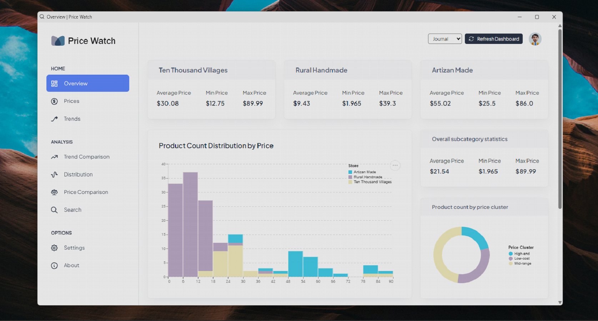

PriceWatch
Your Ultimate Tool for Competitive Pricing Strategy
Read the blog here!
The GitHub repository for the project can be found here!
In today's fast-paced business landscape, staying competitive requires more than just a quality product; it necessitates a keen understanding of market dynamics, especially when it comes to pricing. Enter Price Watch—an innovative application designed to help businesses navigate the complexities of product pricing across various industries.
What is Price Watch?
Price Watch is a cutting-edge solution that allows businesses to track and analyze competitors’ product prices directly from their websites. By consolidating this data, Price Watch empowers users to make informed decisions regarding their own pricing strategies.
Tailored for Diverse Industries
One of the standout features of Price Watch is its versatility. It is specifically designed to cater to businesses that offer a wide range of products across multiple categories and subcategories. Whether you're in retail, e-commerce, or manufacturing, Price Watch has got you covered.
Flexible and Scalable Architecture
Understanding that no two businesses are alike, Price Watch's architecture is both flexible and scalable. This means it can easily adapt to the unique needs of different industries and product categories, making it a valuable tool for any business looking to enhance its pricing strategy.
Data Accuracy You Can Trust
Inaccurate data can lead to poor decision-making, which is why Price Watch incorporates rigorous data cleaning and validation processes. This ensures that the information you receive is both accurate and reliable, giving you the confidence to make strategic pricing decisions.
User-Friendly Interface
Not everyone has a background in data analytics, and Price Watch recognizes this. That’s why the application features a user-friendly interface that makes it accessible to users with varying levels of technical expertise. Whether you’re a seasoned analyst or a business owner just starting out, you’ll find Price Watch easy to navigate.
Comprehensive Analysis at Your Fingertips
Price Watch doesn’t just collect data; it provides in-depth analysis across product categories and subcategories. Users can access detailed insights about pricing trends, allowing them to stay ahead of the competition and optimize their pricing strategies effectively.
Conclusion
In an ever-changing marketplace, having the right tools at your disposal is essential for success. Price Watch offers a powerful solution for businesses seeking to enhance their pricing strategies through competitive analysis. With its flexible architecture, data accuracy, and user-friendly design, Price Watch is the ultimate tool for navigating the complexities of product pricing.
Ready to take your pricing strategy to the next level? Discover what Price Watch can do for you today!
Read the blog here!
The GitHub repository for the project can be found here!
Price Watch, Pricing Strategy, Competitive Analysis, Business Tools, Market Trends